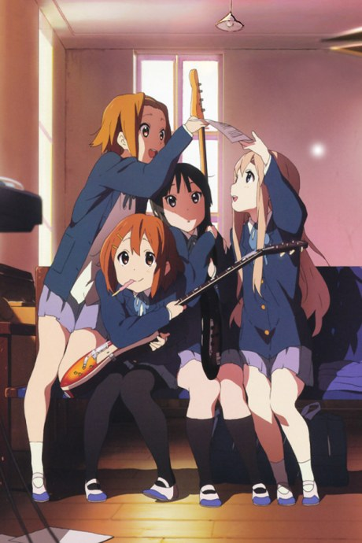
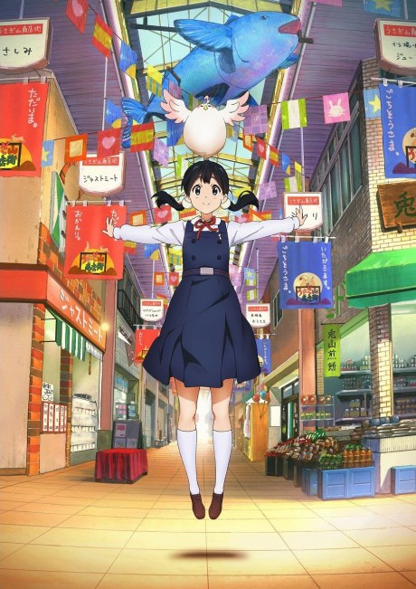

01
“京阿尼”是怎么来的
粉丝把“京都动画”简称成“京阿尼”，后来这个昵称比正式名称更常被使用，连海外观众也这么叫。
Incidents & Anecdotes
一家公司被记住，不只因为作品，也因为发生在它身上的事， 和围绕它长出来的传说。这一页收录一场无法回避的事件、一个被叫作“京都脸”的现象， 以及八则关于京阿尼的逸闻。
Incident
有些事不该被作品美化，也不该被遗忘。
2019. 07. 18
2019 年 7 月 18 日上午，一名男子进入京都动画位于京都市伏见区的第一工作室， 泼洒汽油并点火。数分钟内，整栋建筑被火焰与浓烟吞没。
36 人罹难，30 余人受伤。遇难者中有监督、原画师、作画监督、色彩设计与制作进行： 武本康弘、池田晶子、西屋太志，以及许多名字未必被观众记住、却在每一帧里工作的人。
这不是一部作品可以承载的事。但京都动画选择继续制作——用他们最熟悉的方式， 把“日常”继续画下去。
Aftermath
7 月 18 日，第一工作室遭纵火，36 人罹难、30 余人受伤。日本国内外陆续设立支援窗口与捐款渠道。
捐款与声援从各地涌来。公司为遗属与伤者提供支援，制作团队转移到其他工作室继续工作。
事件后与观众见面的剧场版。银幕内外的告别，在同一个夏天重合。
TV 动画正式复归。片头片尾的明亮，本身就是一句宣告：我们还在画。
1 月 25 日，京都地方法院对被告作出死刑判决。从事件到判决，用了四年半。
随着上诉被撤回，死刑判决确定；辩护方随后提出异议。事件的法律程序仍未完全落幕。
十年系列走到终点。这不是告别，而是把接力棒交给下一部作品。
Phenomenon
一个粉丝发明的词，后来变成了讨论京都动画的入口。
“京都脸”不是官方术语，而是观众对京都动画角色面部相似性的称呼。
偏大的眼睛、细而低的眉毛、小巧的嘴、相近的脸型比例，再加上一种“看起来像同一所学校毕业”的气质—— 当这些特征在不同作品里反复出现，观众就开始用“京都脸”来指认这家公司。
它并不是某一个人的发明。池田晶子、堀口悠纪子、西屋太志等角色设计，在长期的社内作画体系里互相影响； 《幸运星》《轻音少女》之后，这个词被广泛使用，也成了京都动画最容易辨认的视觉签名。
对观众来说，它是辨识度；对创作者来说，它也可能是一种限制—— 当每一张脸都太像，角色就得更靠性格、声音与演出来区分。
“一张脸，是一家公司的笔迹。” —— 本站对“京都脸”的概括

轻音少女2009 · 角色设计 堀口悠纪子

冰菓2012 · 角色设计 西屋太志

玉子市场2013 · 角色设计 堀口悠纪子

吹响吧！上低音号2015 · 角色设计 池田晶子
Anecdotes
关于名字、关于实验、关于一条被动画救活的商店街。
01
粉丝把“京都动画”简称成“京阿尼”，后来这个昵称比正式名称更常被使用，连海外观众也这么叫。
02
1981 年以承接上色起家，直到 2003 年才做出第一部独立制作的 TV 动画《全金属狂潮？Fumoffu》。
03
2009 年《凉宫春日的忧郁》用 8 集几乎相同的剧情、完全不同的分镜与演出，做了一次电视动画的形式实验。
04
《幸运星》的鹫宫神社、《玉子市场》的出町桝形商店街、《上低音号》的宇治，把观众带到真实的街道上。
05
2009 年设立京都动画大赏，2011 年创设文库，把新人原稿变成可以动画化的自家 IP。
06
《Free!》的水、《紫罗兰永恒花园》的光，都是作画与摄影部门共同完成的技术展示。
07
京都动画坚持从内部培养作画与演出，监督大多从原画现场长出来，而不是从外面空降。
08
2021 年《小林家的龙女仆 S》播出，京都动画用一部喜剧宣告回到屏幕。
Now

京都动画本社（京都府宇治市）。摄影：Konomi，公有领域，来自 Wikimedia Commons。
宇治的本社仍在运转，新的创作者仍在被培养。
2024 年的《吹响吧！上低音号》第三季、2025 年的《害怕寂寞的龙》、 2026 年的《最终乐章》与《二十世纪电气目录》——这些作品证明，那间工作室的灯还亮着。
对观众来说，能做的也许很简单：继续看，继续记住那些镜头。